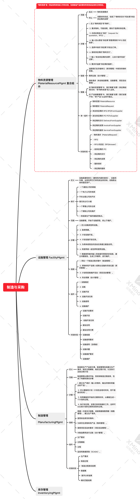

彩色 UML 建模
常见的例子
- MomentInterval：订单、消费、事务、退款申请
- Role：购买对象、供应商、购买人、服务提供商、消费者（这些东西更偏向于元数据）、审核方、发起方。role 按照原书而言是 person 可以 associate 的一些角色，person 可以根据 role 进行一些 action。RBAC 体系即这一思想的实践。保险的干系人在元数据的设定上也是一种role。
- PartyPlaceThing：Role 的具体实现：投保人、被保人、用户、商家、产品、客服。注意，这一类型几乎穷尽了所有的领域实体，也包括各种 person。
- Description：订单的附属对象：消费码、数量、联系⼈、游玩人；用户的附属对象：用户 ID；商家的附属对象：商家 ID、商家名称；产品的附属对象：产品名称、产品价格、产品 ID；退款申请的附属对象：场景金额原因
架构型、彩色和领域无关的组件

架构型
构造型即 stereotype，架构型即 archetype。
四种彩色的架构型
- 粉色的时刻时段（MI）架构型，粉色的时刻时段明细（MIDetail）架构型。由业务和法律需求我们需要追踪的一段模型，有先后之分。它自己可以列出本架构型的所有值和相应的数量。MIDetail 聚合成为 MI。
- 黄色的角色架构型。表示参与某件事的方式。它可以 assess 自己的值和数量，也可以 assess MI。
- 绿色的参与方地点和事物架构型。参与某件事的参与方、地点和事物。它可以 assess 自己的值和数量，也可以 assess Role。
- 蓝色的描述架构型。被全局复用的，有限的几个值。它可以 assess 自己的值和数量，也可以 assess PartyPlaceThing。
- 事实上 Party、Place、Thing可以有三种独立的 archetype，并且分别有自己的独立的 role。
确定一个类的颜色和架构型
先看是不是 MI，再看是不是 Role，再看是不是 Description，都不是就是 PartyPlaceThing。
领域无关的组件
待补充图
领域无关的组件之间的交互
待补充图
组件连接
并不是所有的组件都应该用插入的形式，性价比最高的方法应该是让组件之间相互连接起来。
组件内的 plugin-in point 实际上应该是若干的接口。
12 个（组）复合组件
待补充细节
本书一共介绍 61 种领域无关的组件。
制造和采购

物料资源管理
“物料资源”是一项业务用来完成工作的东西，包括制造产品的原材料和完成业务的日常供应。
范围
起点：物料资源要求
终止：该要求的完成，包括了“物料的交付”和处理“来自供应商的发票”
步骤
- 定义“物料类型”和“物料”。
- 要求物料。可能说明，倾向于选择的供应商。
- 向供应商发出“询价”（request for quotation，RFQ）。
- 输入您从那些“供应商”那里得到的“RFQ 回应信息”。
- 选择中标的“供应商”并发出订单。
- 接收供应商的“物料交付”。
- 输入“来自供应商的发票”，让会计组件完成“过账”。
- 要求并追踪“供应商的服务”。
链接
- 追踪我们在存储单元（库存管理）中保存的物料资源。
- 费用过账（会计管理）。
- 接收请求（来自制造管理、设施管理、项目活动管理）。
镜像
- 在“物料资源管理”中，我们根据“发票（供应商给我们的）”将“物料资源”投入业务。
- 在“产品销售管理”中，我们根据“发票（我们给客户的）”将“产品”从业务中提出。
单一组件
- 物料资源 MaterialResource
- 物料要求 MaterialRequest
- 来自供应商的 RFQ RFQFromSupplier
- 发往供应商的 PO POToSupplier
- 供应商的交付 DeliveryFromSupplier
- 供应商的发票 InvoiceFromSupplier
- 供应商的服务 ServiceFromSupplier
时刻时段
- 物料请求（MaterialRequest）
- RFQ
- RFQ 的回应（RFQAnswer）
- 给供应商的 PO
- 供应商的交付
- 供应商的发票
- 服务请求
- 供应商的服务
交互
组件之间共同协作以完成工作。
请求的传播顺序：
sender -> RFQ -> RFQ answer -> PO -> delivery
报价、下单、交付
扩展
扩展点：
- 供应商的选择
可以管理货物储备建立供应链
物料资源组件
物料资源是业务上使用的某种东西（例如一个具体的部件或一个批次），它可以单独标识（它有一个序列号或诸如此类的东西），它是您认为必须单独记录的东西。单独标识是绿色的 thing。
不可以单独标识或不需要单独标识只需要追踪数量的东西，只需要一个分类目录条目似的蓝色描述就可以了。
物料要求组件
物料要求组件只有一个时刻时段“物料要求”。
物料要求可能来自一个用户、来自“物料资源描述”中规定的重新采购阈值，或来自一个“总体项目活动要求”，“物料请求”对“总体项目活动要求”起到了支持的作用。
交互：sender -》物料请求 -》物料请求 detail -》物料请求detail 描述（描述数量）。
RFQ
RFQ 有两个时刻时段- RFQ 和 RFQ Answer。
对于一个 RFQ，它的前驱 MI 是物料请求，对于 RFQAnswer，它的后继 MI 是 PO。
POToSupplier 给供应商的订单
POToSupplier 就是本企业组件的核心 MI。
确定了物料资源的数量。
POToSupplier 链接到购买者（Buyer）、供应商（supplier）和连接点（SupplierPointOfContract）
POToSupplier明确了物料资源的数量。
DeliveryFromSupplier 供应商的交付
DeliveryFromSupplier 就是本企业组件的核心 MI。
DeliveryFromSupplier 确定了收到的数量、接受的数量和拒绝的数量。
它链接PO 明细，也链接到存储单元明细。
InvoiceFromSupplier 供应商的发票
InvoiceFromSupplier 就是本企业组件的核心 MI。
它记载了具体的采购信息。
ServiceFromSupplier 供应商的服务
本企业组件的核心 MI 包括“ServiceRequest”和“ServiceFromSupplier”。
设施管理
定义：设施是建筑单元（建筑和内部的房间）、设备和车辆，业务利用它们来完成业务目标。设施是业务的固定资产。
例子：
- 一个通信公司的网络
- 一个电力公司的电网
- 汽车出租公司的汽车
- 银行的分行大楼
- 一个零售公司的仓库
- 一个钢铁公司的高炉
- 一条组装生产线的储备控制点。
范围：设施管理，开始于设施获取，终止于维护。
步骤：
- 定义设施类型和设施。
- 取得预算。
- 计划设施开发。
- 计划设施开发任务。
- 为将来或现在的活动任务建立建造合同。
- 和使用者一起包养和使用设施。
- 根据使用者的输入和检查所得到的的信息，建立问题报告，生成工作顺序，进行维护。
链接：
- 用在一个制造过程步骤中（制造管理）。
- 将物料和产品移入或移出设施的存放位置（库存管理）。
- 计划和控制维护活动（项目活动管理）。
- 符合预算（会计管理）。
组件：
- 设施描述
- 设施
- 设施开发
- 设施开发任务
- 设施使用
- 设施维护
时刻时段：
- 设施开发要求
- 设施开发
- 设施开发任务
- 建设合同
- 建设合同付费
- 设施检查
- 设施使用要求
- 设施使用（及明细）
- 设施问题
- 设施维护要求
- 设施维护
制造管理
定义：制造是生产产品或文章。制造管理包括建立生产要求、制定过程模板、制定过程计划，以及执行这些过程计划。
范围：制造管理从要求开始，到实际制造过程结束，包括了构建和测试步骤。
步骤：
- 建立生产请求（输入的物料、输出的物料和输出的产品）。
- 定义模板和计划（计划包含相对时间，而不是绝对时间）。
- 利用模板和开始的日期和时间，从模板生成一个计划的过程。
- 执行该过程，全程记录实际做的工作。这样可以比较计划的过程和实际的过程。
链接：
- 根据一次或多次销售，或者根据销售预期（销售管理），建立生产请求。
- 使用来自库存的物料；
- 为库存生辰物料和产品（物料管理）。
- 接受项目活动的要求（项目活动管理）。
- 对制造费用进行过账（会计管理）。
组件：
- 生产要求
- 过程模板
- 过程
- 监控和数据获取（SCADA）。
时刻时段：
- 生产要求
- 制造过程
- 制造过程测试结果
- 数据集
- 数字分析结果
- 模式匹配结果
库存管理
定义：库存管理是将库存物品移入、移出存储单元，或在存储单元之间移动。
范围：从定义存储单元开始，到库存移动结束。
步骤：
- 定义存储单元。
- 接受移动请求。
- 将这些请求组合成计划的移动。
- 移动库存物品。
链接：
- 追踪在存储单元中的物料资源（物料资源管理）。
- 追踪在存储单元中的产品（产品销售管理）。
镜像：在这里我们物品移入业务。在产品销售管理中，我们将物品移出业务。
组件：
- 库存单元
- 移动请求
- 移动
时刻时段：
- 保有的数量
- 移动请求
- 移动
扩展：
- 计划车辆移动
- 自动化库存移动
- 添加更复杂的库存价值计算
销售
产品销售管理
定义：产品可以作为一件物料资源，带有一些附加原则。可以提取任何物料资源，并将它变成一个产品。
范围：以销售为起点，终止于开发票。
步骤：
- 定义产品类型和产品。
- 销售给客户。
- 发送产品。
- 给客户开发票。
- 记录产品的交付，追踪并解决交付问题报告。
- 达成协议并完成评估。
链接：
- 从库存中扣除数量（链接到物料资源管理，它与库存管理进行交互）。
- 针对发票总额进行过账。
镜像：
- 在产品销售管理中，我们根据发票（我们给客户的）将物品从业务中提出。
- 在物料资源管理中，我们根据发票（供应商）将物品投入业务。
组件：
- 产品（Product）
- 对客户的销售（SaleToCustomer）
- 发货给客户（ShipmentToCustomer）
- 交付给客户（DeliveryToCustomer）
- 给客户开发票（InvoceToCustomer）
- 产品协议（ProductAggrement）
- 产品评估（ProductAssessment）
时刻时段：
- 产品价格（ProductPrice）
- 对客户的销售（SaleToCustomer）
- 发货给客户（ShipmentToCustomer）
- 交付给客户（DeliveryToCustomer）
- 交付问题报告（DeliveryProblemReport）
- 给客户开发票（InvoiceToCustomer）
- 折扣协议（DiscountAggreement）
- 佣金协议（CommissionAgreement）
- 费用和开销分配（CostAndOverheadAllocation）
- 市场调研（MarketStudy）
- 销售预测（SalesForecast）
- 地理区域指派（GeographicRegionAssignment）
扩展：
- 添加支持售前活动的组件。
现金销售管理
范围：以“收银机指派”为起吊，终止于“现金销售”（包括销售项、返回项或两者）。
步骤：
- 创建“收银机指派”。
- 开始现金销售会话。
- 创建现金销售。
链接：
- 记录销售的产品。
- 针对销售和支付进行过账。
镜像：
- 在这里，支付是立即进行的。
- 在产品销售管理中，支付是一段时间之后进行的。
组件：
- 现金销售会话（CashSaleSession）。
- 现金销售（CashSale）。
时刻时段：
- 收银机指派（CashDrawerAssignment）
- 现金销售会话（CashSaleSession）
- 现金销售（CashSale）
扩展：
- 通过允许大量在线现金销售。
客户账户管理
定义：许多业务利用账户来追踪客户在给定的业务交易背景下的借款项和贷款项。租赁公司常常使用账户来最终出租和退回。
范围：以申请为起点，终止于账户交易。
步骤：
- 接受客户账户申请。
- 评估申请。
- 批准或拒绝。
- 如果批准，生成一个新的客户账户。
- 创建客户交易，记录借款项、贷款项，或两者。
链接：过账账户交易（会计管理）。
镜像：在客户管理中，我们建立并维护账户，这样可以从客户的角度来追踪和呈现正在发生的业务。在会计管理中，我们建立并维护账户是为了从财务的角度来追踪总体的业务，它的组织方式是管理层规定的，或者是历法机构规定的（在某些国家），或者两种因素都存在。
组件：
- 产品账户申请（CustomerAccountApplication）
- 客户账户（CustomerAccount）
- 客户账户交易（CustomerAccountTransaction）
时刻时段：
- 产品账户申请（CustomerAccountApplication）
- 客户账户交易（CustomerAccountTransaction）
关系
人力资源管理
定义：人力资源是在企业中的人员。人力资源管理是检查这些人员完成他们的工作并对他们取得的成功进行奖励。
范围：以职位要求为起点，终止于工资单支付和费用报销。
步骤：
- 创建职位要求。
- 找到雇员和其他候选者。
- 雇用新人。
- 建立薪酬协议。
- 培养技能。
- 创建职位任命。
- 创建任务指派。
- 追踪雇员的活动。
- 评估绩效。
- 计算工资单和报销费用。
链接：
- 针对项目活动完成人力资源要求。
- 针对项目活动完成人力资源活动（项目活动管理）。
- 对工资单支付和费用报销进行过账（会计管理）。
镜像：
- 在物料资源管理中，我们将物品移入业务。
- 在人力资源管理中，我们管理完成业务的人员。
组件：
- 雇佣（Employeement）
- 职位要求（Position Request）
- 职位任命（Position Assignment）
- 工作与支付（WorkAndPayment）
- 技能习得（SkillAcquisition）
时刻时段：
- 雇佣，薪酬协议（Employeement，CompensationAgreement）
- 职位要求（PositionRequest）
- 职位任命，任务指派，绩效评估（PositionAssignment，TaskAssignment，PerformanceAssignment）
- 雇员工作，工资单支付和费用报销（EmployeeWork，PayrollPayment，ExpensePayment）
- 技能习得计划，参与，技能拼缝（SkillAcquisitionProgram，Participation，SkillRating）
扩展：
- 添加对雇员的薪酬和权益。
关系管理
定义：关系管理涉及人员、组织机构，以及人员或组织机构可能扮演的诸多角色。
范围：涉及参与方、参与方角色、组织机构角色。
链接：关系管理是参与方和角色的集中地。因此，它链接到所有组件。
组件：
- 参与方（Party）
- 参与方角色（PartyRole）
- 人员角色（PersonRole）
- 组织机构角色（OrganizationRole）
时刻时段：
- 参与方关系（PartyRelationship）
- 地址使用（AddressUse）
扩展：
- 按用法将角色分组打包
协调和支持
项目活动管理
定义：项目管理涉及所有需要计划和执行的企业活动。
范围：以项目为起点，终止于活动。
步骤：
- 建立项目
- 创建项目活动要求
- 执行活动
- 利用资源和活动缓冲池来找到有效的组合
链接：
- 请求物料资源（物料资源管理）。
- 请求制造过程（制造管理）。
- 要求设施开发（设施管理）。
- 请求设施使用（设施管理）。
- 请求库存移动（库存管理）。
- 要求职位（人力资源管理）。
组件：
- 项目活动要求（ProjectActivityRequest）
- 项目活动（ProjectActivity）
- 活动和资源缓冲池（ProjectAndResourcePool）
- 时刻时段：
- 项目（Project）
- 项目活动要求（ProjectActivityRequest）
- 项目活动（ProjectActivity）
- 扩展：
- 添加写作和计划模拟
- 工作细分结构和其他计划工具
会计管理
- 定义：追踪预算，聚集来自其他组件的会计过账，生成财务报表。
- 范围：以账户为起点，终止于这些账户的会计过账。
- 步骤：
- 定义会计科目表（一个账户列表，用于追踪财务数据）
- 建立账户
- 创建预算要求
- 建立预算
- 接受支付
- 创建账户过账（正式记录财务数据）
- 链接：
- 为项目活动要求建立预算要求并进行预算（来自项目活动管理）。
- 为设施开发建立预算要求并并进行预算（来自设施管理）。
- 接受会计过账（来自物料资源管理、设施管理、制造管理、库存管理、产品销售管理、会计管理和项目活动管理）。
- 组件：
- 账户（Account）
- 预算（Budget）
- 支付（Payment）
- 过账（Posting）
- 时刻时段：
- 预算要求（BudgetRequest）
- 预算（Budget）
- 支付（Payment）
- 过账（Posting）
- 扩展：
- 添加详细的账户交易和深度的账户分析
文档管理
- 定义：将研究结果、业务结果和合法交易用文档记录下来。
- 范围：以文档模板为起点，终止于文档发布。
- 步骤：
- 定义文档模板
- 根据模板生成文档
- 编写文档内容
- 记录对文档的访问
- 构建文档
- 批准或拒绝文档
- 发布文档
- 组件：
- 文档（Document）
- 文档活动（Document Activity）
- 扩展：
- 添加文档存储
- 添加文档追踪